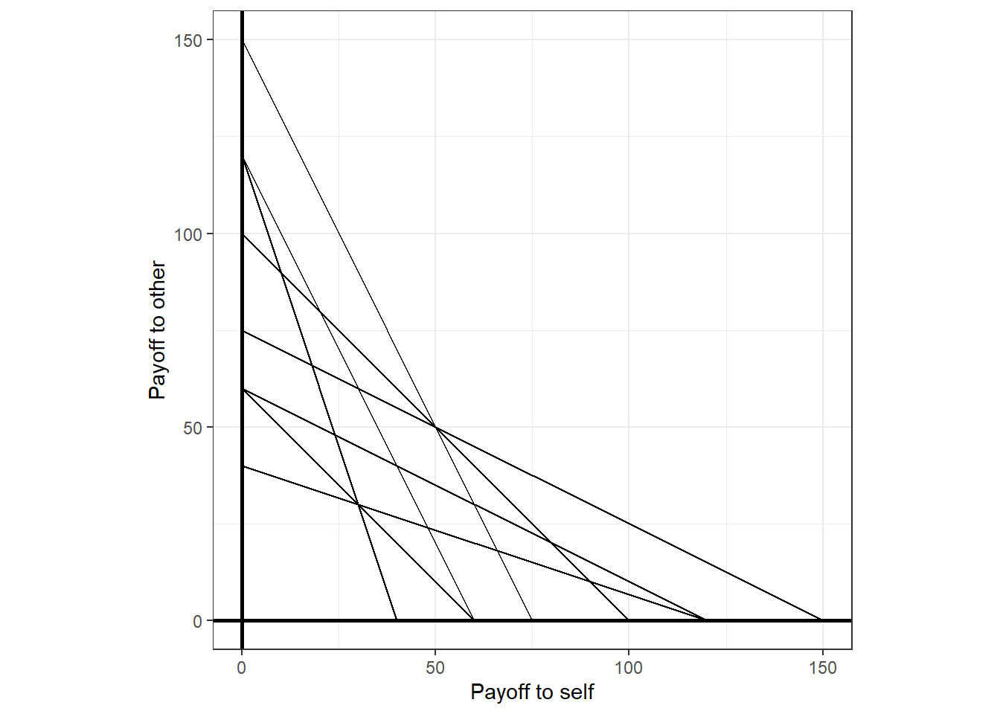
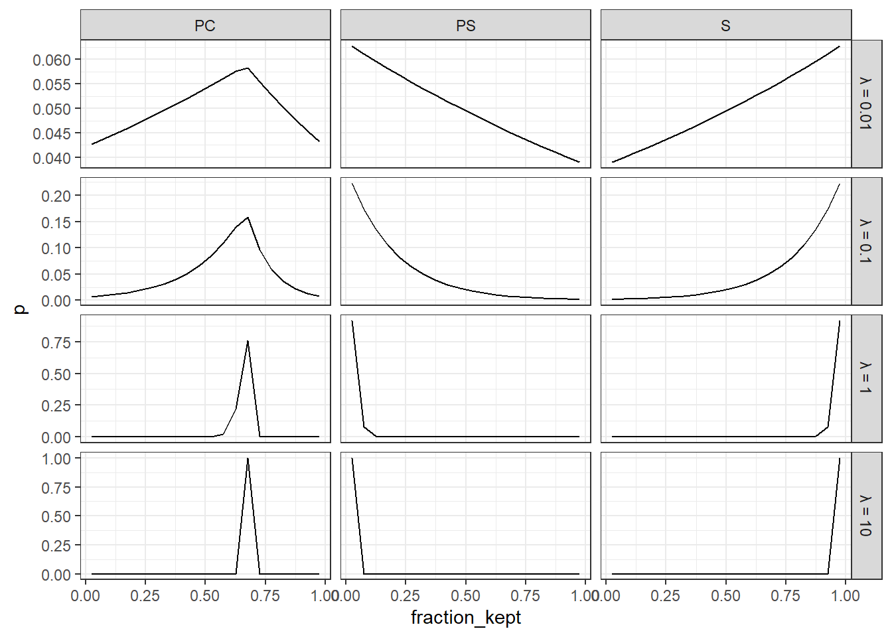

8 Mixture models
Sometimes we are lucky enough to have more than one model of how people could behave in our experiment. While this opens up a whole lot of interesting research questions that we could ask, it also creates a whole lot of problems associated with assigning relative importance to each of these models. One early solution was to take a “horse race” approach: define some measure of goodness of fit, such as the log-likelihood or mean squared prediction error, then pick the model (i.e. the horse) that wins by this measure. Applications of this technique can be seen in the classification of participants in Andreoni and Vesterlund (2001) and Andreoni and Miller (2002) into several types of other-regarding preferences using nonlinear least squares. They can also be seen in the classification of participants into different types of risk preferences in Hey and Orme (1994) using the Akaike information criterion. When applied to data one participant at a time, as is done in these applications, this kind of classification can begin to shed light on the underlying fractions of the population that behave according to each model.
However when applied to a whole experiment with many participants, picking a winner makes less sense: it could be that all, or at least a fair number of, models are important for substantial fractions of the population, and classifying all of our data into just one will not acknowledge the richness of our data-generating process. The mixture model is a formal way of estimating these fractions in the population. Here, we will take a menu of models that could be important for certain slices of our data, and estimate the fraction of the data that are best characterized by each of these models.
8.2 Dichotomous and toolbox mixture models
I think of the typical types of structural mixture models taken to data from economic experiments falling into two categories. These relate to how the data may be sliced to divide up decisions as coming from one model or another. That is, data within a slice must be generated from the same model, but data between slices can be generated from different models. These two types of mixture model differ as to how the data can be sliced. In particular, they differ in whether data from one participant can be generated by only one, or more than one of the models on our menu.
Conte, Hey, and Moffatt (2011), for example, assumes that the data can be sliced up to the participant level, but no further. An immediate implication of this is that participants have “types”: if they make one decision based on model \(B\), then they could never make decisions based on models \(A\) or \(C\). Hence, we can interpret the mixing probabilities from this kind of model as the fraction of participants in the population who behave according to each model. I will refer to this kind of model as a “dichotomous” mixture model. When we are using a dichotomous mixture model with a menu of length \(M\), our grand log-likelihood will be:
\[ \begin{aligned} \log p(y\mid \rho,\beta)&=\sum_{i=1}^n\log\left(\sum_{m=1}^M\rho_m\exp\left(\sum_{t=1}^T\log p(y_{i,t}\mid \beta,m)\right)\right) \end{aligned} \]
where \(\beta\) is a vector of parameters other than \(\rho\), and \(p(y_{i,t}\mid\beta,m)\) is the likelihood for observation \(y_{i,t}\) given that it was generated by model \(m\).43
Harrison and Rutström (2009), on the other hand, assumes that the data can be sliced at the decision level. That is, participants can make some decisions based on model \(A\), some based on model \(B\), and so on. Following Stahl (2018), I refer to these models as toolbox mixture models. When we are using a toolbox mixture model with a menu of length \(M\), our grand log-likelihood will be:
\[ \begin{aligned} \log p(y\mid\rho,\beta)&=\sum_{i=1}^n\sum_{t=1}^T\log\left(\sum_{m=1}^M\rho_m\exp\left(\log p(y_{i,t}\mid \beta,m)\right)\right) \end{aligned} \]
In particular, note how the ordering of the summations is different. However perhaps more importantly, note how the interpretation of the mixing probabilities is different. In the dichotomous model, we assume that a participant’s data can only be generated from one of the models on the menu. Hence in this case, it is appropriate to say that our participants have “types”, and that we can interpret the mixing probabilities \(\rho\) as the fraction of participants whose decisions are best represented by each model. Hence we can say things like “\(100\rho_1\%\) of participants use model 1”. On the other hand in a toolbox mixture model, participants can use all of the models on the menu for different decisions. In the toolbox case we should therefore interpret \(\rho\) as the fraction of decisions that are best represented by each model. Hence we can say things like “participants use model 1 \(100\rho_1\%\) of the time”.
8.3 Coding peculearities
This is a situation where we need to understand a bit about the kind of parameters that Stan can simulate. Specifically, they must be continuous random variables. This throws a bit of a spanner in the works when writing our Stan model, as the easy way to simulate a posterior for a mixture model is to use data augmentation, with the augmented data being categorical variables for which model the observation is being generated from. However since Stan cannot handle categorical parameters, we will instead have to integrate the likelihood.44
Another issue we will run into when computing the grand likelihood, we need to exponentiate the log-likelihood in order to incorporate the mixing probabilities, but then we need to then convert the grand likelihood back to log units in order to add it to Stan’s target. To avoid problems with exponentiating either very small or very large model likelihoods, we will use the following algebra trick:
\[ \begin{aligned} \log\left(\sum_{m=1}^M\rho_m\exp(l_m)\right) =\log\left(\sum_{m=1}^M\exp\left(\log\rho_m\right)\exp(l_m)\right) =\log\left(\sum_{m=1}^M\exp(l_m+\log\rho_m)\right) \end{aligned} \]
which will allow us to use Stan’s log_sum_exp function to compute the grand likelihood.
8.4 Example experiment: Andreoni and Vesterlund (2001)
Andreoni and Vesterlund (2001) investigate whether there are any differences in other-regarding preferences between male and female participants. In their experiment, each participant was presented with eight different budget sets, which are shown in Figure 8.1.
AV2001choices<-read.csv("Data/AV2001choices.csv")
AV2001parameters<-read.csv("Data/AV2001parameters.csv")
(
ggplot(AV2001parameters,
aes(x=0,y=income*pOther,
xend = income*pSelf,yend=0))
+geom_segment()
+theme_bw()
#+xlim(c(0,100))+ylim(c(0,100))
+coord_fixed()
+geom_vline(xintercept=0,linewidth=1)
+geom_hline(yintercept=0,linewidth=1)
+xlab("Payoff to self")
+ylab("Payoff to other")
)
Figure 8.1: The eight budget sets presented to participants in Andreoni and Vesterlund (2001).
For each of the budget sets, participants chose an allocation of money between themselves and another participant. As you can see, there is a good range of different trade-offs between the earnings of the self, and the earnings of the other. They frame this allocation task to participants as having an allocation of “tokens”, and allocating these between themselves (“holding” the tokens) and another participant (“passing” the tokens). The tokens are then exchanged for dollars at different rates, hence the different slopes and intercepts of the budget lines above. In keeping with the data as I have it, I will use the following notation to refer to elements of the dataset:
- \(\mathrm{income}_{i,t}\) is the endowment measured in tokens
- \(\mathrm{pSelf}_{i,t}\) is the value of a token to the decision-maker (the “self”)
- \(\mathrm{pOther}_{i,t}\) is the value of a token to the other participant (the “other”)
- \(y_{i,t}\) is the fraction of tokens that the decision-maker kept.
where \(i\in\{1, 2, \ldots, N=142\}\) indexes the participants, and \(t\in\{1, 2, \ldots, T=8\}\) indexes the budget set.
In their Section III.B, Andreoni and Vesterlund (2001) classify their participants into three types of other-regarding preferences. These three types are:
- Selfish preferences. These participants only care about their own payoff, and so will choose the allocation that maximizes their own earnings.
- Perfect substitutes preferences. These participants care about the total group earnings, and so will choose the allocation that maximizes this quantity. Since the budget lines are linear, this means choosing at one of the endpoints of the budget lines, unless \(\mathrm{pSelf}_{i,t}=\mathrm{pOther}_{i,t}\), in which case anything is optimal.45
- Perfect complements, or Leontief preferences. These participants care about the minimum of their own and the other’s payoff. They will choose the allocation that is at the intersection of the budget line and the \(45^\circ\) line.
We can represent these preferences as utility functions as follows:
\[ \begin{aligned} U^S(\pi_s,\pi_o)&=\pi_s\quad &\text{Selfish}\\ U^{PS}(\pi_s,\pi_o)&=\pi_s+\pi_o\quad&\text{Perfect substitutes}\\ U^{PC}(\pi_s,\pi_o)&=\min\{\pi_s,\pi_o\}\quad & \text{Perfect complements} \end{aligned} \]
These will be the three models that we will use for the mixture models below. Andreoni and Vesterlund (2001) classify their participants into one of these types by choosing the type that minimizes the Euclidean distance between the types’ predictions and observed behavior. For this application, I will show you how to specify and estimate a mixture model that estimates the fraction of each type present in the data.46
While the above utility functions are sufficient to make deterministic predictions about how a participant might behave in this experiment, in order to turn this into a probabilistic model, we need to specify a probabilistic decision rule. For this, I will assume the logit choice rule, which is:
\[ \begin{aligned} p(y_{i,t}\mid \rho,\lambda,m)&=\frac{\exp(\lambda U^m(\mathrm{income}_{i,t}y_{i,t}\mathrm{pSelf}_{i,t},\mathrm{income}_{i,t}(1-y_{i,t})\mathrm{pOther}_{i,t} ))}{\sum_{j\in\{\mathrm{S},\mathrm{PS},\mathrm{PC}\}}\exp(\lambda U^j(\mathrm{income}_{i,t}y_{i,t}\mathrm{pSelf}_{i,t},\mathrm{income}_{i,t}(1-y_{i,t})\mathrm{pOther}_{i,t} ))} \end{aligned} \]
Noting that all three of the utility functions are homogeneous of degree 1, you will see the following representation show up in my code, which is mathematically equivalent, but saves a bit of time typing out:
\[ \begin{aligned} p(y_{i,t}\mid \rho,\lambda,m)&=\frac{\exp(\lambda \mathrm{income}_{i,t}U^m(y_{i,t}\mathrm{pSelf}_{i,t},(1-y_{i,t})\mathrm{pOther}_{i,t} ))}{\sum_{j\in\{\mathrm{S},\mathrm{PS},\mathrm{PC}\}}\exp(\lambda \mathrm{income}_{i,t}U^j(y_{i,t}\mathrm{pSelf}_{i,t},(1-y_{i,t})\mathrm{pOther}_{i,t} ))} \end{aligned} \]
This probabilistic choice rule, an assumption that all choices are independently distributed, and the choice of whether we are using a dichotomous or toolbox mixture model, pins down the grand likelihood function. For the dichotomous case, this is:
\[ \begin{aligned} \log p(y\mid \rho,\lambda)&=\sum_{i=1}^n\log\left(\sum_{m\in\{\mathrm{S},\mathrm{PS},\mathrm{PC}\}}\exp\left(\sum_{t=1}^T\log p(y_{i,t}\mid \rho,\lambda,m)+\log\rho_m\right)\right) \end{aligned} \]
Here we are assuming that participants’ decisions can only ever be generated from one of the three models. This is why in dichotomous mixture models the individual models are often referred to as types: a participant is either either a selfish type, a perfect substitutes type, or a perfect complements type. This is not the case for the toolbox specification, where we allow participants to use all three models. In the case of the toolbox mixture model, the grand likelihood is:
\[ \begin{aligned} \log p(y\mid \rho,\lambda)&=\sum_{i=1}^n\sum_{t=1}^T\log\left(\sum_{m\in\{\mathrm{S},\mathrm{PS},\mathrm{PC}\}}\exp(\log p(y_{i,t}\mid \rho,\lambda,m)+\log \rho_m)\right) \end{aligned} \]
8.4.1 As basic as it gets
To begin with, I will assume that \(\lambda\) is homogeneous so I can just show you how a mixture model is different from a representative agent model. This will probably lead to some strange results, as it is likely that participants are heterogeneous along this dimension, but it helps to see the actual mixture part of the mixture model.
Here is the Stan file I used for the dichotomous mixture model:
/*
AV2001_3typesDichotomous.stan
Mixture model assuming each participant is one type forever
*/
data {
int<lower=0> N;
int<lower=0> nParticipants;
int<lower=0> id[N];
int<lower=0> idStart[nParticipants];
int<lower=0> idEnd[nParticipants];
vector[N] income;
vector[N] pSelf;
vector[N] pOther;
int binLength;
vector[binLength] bin_grid;
int bin_kept[N];
vector[3] prior_mix;
real prior_lambda[2];
}
transformed data {
}
parameters {
simplex[3] mix;
real<lower=0> lambda;
}
model {
matrix[N,3] like_i;
for (ii in 1:N) {
// Selfish
like_i[ii,1] = log_softmax(lambda*income[ii]*bin_grid*pSelf[ii])[bin_kept[ii]];
// Perfect substituties
like_i[ii,2] = log_softmax(lambda*income[ii]*(bin_grid*pSelf[ii]+(1.0-bin_grid)*pOther[ii]))[bin_kept[ii]];
// Perfect complements
vector[binLength] UPC;
UPC = fmin(bin_grid*pSelf[ii],(1.0-bin_grid)*pOther[ii]);
like_i[ii,3] = log_softmax(lambda*income[ii]*UPC)[bin_kept[ii]];
}
for (ii in 1:nParticipants) {
int iStart = idStart[ii];
int iEnd = idEnd[ii];
vector[3] like_type = like_i[iStart:iEnd,]'*rep_vector(1.0,iEnd-iStart+1);
target += log_sum_exp(like_type +log(mix));
}
// priors
mix ~ dirichlet(prior_mix);
lambda ~ lognormal(prior_lambda[1],prior_lambda[2]);
}And here is the Stan file I used for the toolbox mixture model:
/*
AV2001_3types_toolbox.stan
Mixture model assuming each decision is one type
*/
data {
int<lower=0> N;
int<lower=0> nParticipants;
int<lower=0> id[N];
int<lower=0> idStart[nParticipants];
int<lower=0> idEnd[nParticipants];
vector[N] income;
vector[N] pSelf;
vector[N] pOther;
int binLength;
vector[binLength] bin_grid;
int bin_kept[N];
vector[3] prior_mix;
real prior_lambda[2];
}
transformed data {
}
parameters {
simplex[3] mix;
real<lower=0> lambda;
}
model {
matrix[N,3] like_i;
for (ii in 1:N) {
// Selfish
like_i[ii,1] = log_softmax(lambda*income[ii]*bin_grid*pSelf[ii])[bin_kept[ii]];
// Perfect substituties
like_i[ii,2] = log_softmax(lambda*income[ii]*(bin_grid*pSelf[ii]+(1.0-bin_grid)*pOther[ii]))[bin_kept[ii]];
// Perfect complements
vector[binLength] UPC;
UPC = fmin(bin_grid*pSelf[ii],(1.0-bin_grid)*pOther[ii]);
like_i[ii,3] = log_softmax(lambda*income[ii]*UPC)[bin_kept[ii]];
target += log_sum_exp(like_i[ii,]'+log(mix));
}
// priors
mix ~ dirichlet(prior_mix);
lambda ~ lognormal(prior_lambda[1],prior_lambda[2]);
}As you can see, there isn’t much of a difference between them: only the way the model-specific likelihoods enter the grand likelihood. Note that the only difference between them is in the model block, and even then after all of the likelihoods for the individual models are calculated.
A problem I ran into when coding this was that the token endowment was different for different decisions. As participants could choose an endowment in integer multiples of tokens, this means that the size of the choice set changes with the variable income. I decided to re-scale the problem by focusing on the derived variable \(y_{i,t}\), which is the fraction of tokens kept by the participant. I then discrietize this fraction into 20 evenly-spaced bins, which I call bin_grid, and generate the variable bin_kept, which identifies the closest fraction on the grid to the actual fraction \(y_{i,t}\).
Now that we have the models coded up, we can move on to thinking about priors. As you can see in the above code, I have chosen a log-normal prior for \(\lambda\). This makes sense because \(\lambda\) must be greater than zero. For the mixing probabilities, their support is the 3-dimensional simplex. A good choice of prior when we have a parameter that has a simplex support is the Dirichlet distribution, which is a generalization of the Beta distribution to more than two categories. That is, the Beta distribution is to binary variables as the Dirichlet distribution is to categorical variables. For \(\rho\) then, I choose a prior of:
\[ \rho \sim \mathrm{Dirichlet}\left(\begin{pmatrix}1&1&1\end{pmatrix}^\top\right) \]
which is reasonably spread out. For perspective, the marginal prior for the any of the types implied by this distribution is:
\[ \rho^X\sim \mathrm{Beta}(1,2),\quad X\in\{\mathrm{S},\mathrm{PS},\mathrm{PC}\} \]
which has a prior mean of \(E[\rho^X]=\frac{1}{1+2}=\frac13\), so on average each type is equally likely.
While we might be much more interested in our estimates of \(\rho\), we also need to be careful in choosing a prior for \(\lambda\). To investigate what reasonable values of \(\lambda\) could be, we can plot the implied probability distribution of actions for several different values of \(\lambda\). To get a feel for an appropriate scale for \(\lambda\), I do this for several values of \(\lambda\) for \(\mathrm{pSelf}=1\), \(\mathrm{pOther}=2\) and \(\mathrm{income}=50\). This is shown in Figure 8.2. Here it seems that there is enough plausible behavior happening in all of these panels, so we should choose a prior that does places a fair amount of mass over most of this range. The following prior achieves this, and centers the median prediction on the \(\lambda=1\) panels:
\[ \log\lambda\sim N(\log1,1^2) \]
pSelf<-1
pOther<-2
income<-50
d<-expand_grid(fraction_kept = seq(0.025,0.975,by=0.05),
lambda = c(0.01,0.1,1,10),
type = c("S","PS","PC")) |>
rowwise() |>
mutate(LU = ifelse(type=="S",lambda*income*fraction_kept*pSelf,
ifelse(type=="PS",lambda*income*(fraction_kept*pSelf+(1-fraction_kept)*pOther),
lambda*income*min(fraction_kept*pSelf,(1-fraction_kept)*pOther))
)
) |>
ungroup() |>
arrange(type,lambda,fraction_kept) |>
group_by(type,lambda) |>
mutate(expLU = exp(LU-max(LU)),
p = expLU/sum(expLU),
lambda = paste("\u03bb =",lambda)
)
(
ggplot(data=d,aes(x=fraction_kept,y=p))
+geom_path()
+facet_grid(lambda ~ type,scales="free")
+theme_bw()
)
Figure 8.2: Implied choice probabilities for various values of \(\lambda\).
Now that we have fully specified the likelihood and priors, we can go and estimate the model! Since Andreoni and Vesterlund (2001) were interested in differences in other-regarding preferences between male and female participants, I estimate both the dichotomous and toolbox models using all of the data, as well as estimating them just with the female participants, and just with the male participants. The estimates can be seen in Table 8.1.
rounding<-3
FileList<-list.files(path = "Code/MixtureModels")
FileList<-FileList[grepl("AV2001Dichotomous",FileList) | grepl("AV2001Toolbox",FileList)]
EstSum<-data.frame()
for (ff in FileList) {
EstSum<-summary(readRDS(paste0("Code/MixtureModels/",ff)))$summary |>
data.frame() |>
mutate(file=ff,
parameter = c("Mix: S","Mix: PS","Mix: PC","lambda","lp__")
) |>
rbind(EstSum)
}
EstSum<-EstSum |>
mutate(
`Model type` = ifelse(grepl("Dichotomous",file),"Dichotomous","Toolbox"),
Group = sub(".rds","",sub(".*_","",file)),
msd = paste0(
mean |> round(rounding),
" (",sd |> round(rounding),")"
)
) |>
dplyr::select(c(parameter,`Model type`,Group,msd))|>
pivot_wider(names_from = c(`Model type`,Group),values_from = msd,names_sep=" ")
EstSum |> kbl(caption = "Estimates from the 3-type mixture model using data from Andreoni and Vesterlund (2001).") |> kable_classic(full_width=FALSE)| parameter | Toolbox Male | Toolbox Female | Toolbox Both | Dichotomous Male | Dichotomous Female | Dichotomous Both |
|---|---|---|---|---|---|---|
| Mix: S | 0.468 (0.023) | 0.386 (0.03) | 0.44 (0.019) | 0.01 (0.01) | 0.507 (0.291) | 0.453 (0.042) |
| Mix: PS | 0.192 (0.022) | 0.044 (0.022) | 0.148 (0.017) | 0.01 (0.01) | 0.473 (0.29) | 0.153 (0.031) |
| Mix: PC | 0.34 (0.019) | 0.57 (0.029) | 0.412 (0.017) | 0.98 (0.014) | 0.02 (0.019) | 0.394 (0.041) |
| lambda | 0.19 (0.009) | 0.158 (0.011) | 0.18 (0.007) | 0.377 (0.039) | 2.515 (2.131) | 0.137 (0.004) |
| lp__ | -1730.788 (1.208) | -919.796 (1.248) | -2666.643 (1.259) | -169.494 (1.271) | -9.075 (1.329) | -2334.515 (1.23) |
Since the dichotomous models have a much more similar interpretation to the original nonlinear least squares classification of Andreoni and Vesterlund (2001), I will focus on these estimates. In particular, they are most similar to the “Total” columns in their Table III. Overall, the “Dichotomous Both” model (rightmost column) is estimating that we have about 45% selfish, 15% perfect substitutes, and 40% perfect complements participants. This is compared to 43% selfish, 21% perfect substitutes, and 35% perfect complements classified in Andreoni and Vesterlund (2001). Given some substantial differences in the estimation strategies used, these estimates are remarkably similar. However the similarity does not hold up when we slice the data by male and female participants. My dichotomous mixture model for example, estimates that almost all (98%) male participants are perfect complements types, whereas the equivalent number in Andreoni and Vesterlund (2001) is 25%. Also, for the female participants, I estimate about 47% are perfect substitutes types, but Andreoni and Vesterlund (2001) estimate this to be about 9%.
In this case, if I had to choose one of these estimation strategies, I would have gone with the original nonlinear least squares approach in Andreoni and Vesterlund (2001). This is mainly because I suspect that the assumption in my model that \(\lambda\) is homogeneous is a terrible one. In fact, Andreoni and Vesterlund (2001) note that they can classify 47% of male and 36% of female participants based on their choices perfectly matching one of the three types’ predictions. This, coupled with the remaining fractions not being classified by perfectly matching predictions, suggests that there should be substantial heterogeneity in \(\lambda\). I will extend the dichotomous model in the next section to account for this.
8.4.2 Adding some heterogeneity
From here, it is not too difficult to add some heterogeneity to \(\lambda\) by including a hierarchical component. Using a log-normal distribution to ensure that each \(\lambda_i\) is positive, the new population-level part of the model is:
\[ \log \lambda_i\sim N(\mu_\lambda,\sigma^2_\lambda) \]
Since we now have this hierarchical structure on \(\lambda_i\), we need to choose priors for \(\mu_\lambda\) and \(\sigma_\lambda\). For this application, I choose:
\[ \begin{aligned} \mu_\lambda&\sim N(0,1)\\ \sigma_\lambda&\sim\mathrm{Cauchy}^+(0,0.05) \end{aligned} \]
Here is the Stan program that estimates the dichotomous model. For this section, I will just focus on the dichotomous model because it is most similar to the classification in Andreoni and Vesterlund (2001).
/*
AV2001_3types_dichotomous_hlambda.stan
Mixture model assuming each participant is one type forever
lambda is participant specific and log-normally distributed
*/
data {
int<lower=0> N;
int<lower=0> nParticipants;
int<lower=0> id[N];
int<lower=0> idStart[nParticipants];
int<lower=0> idEnd[nParticipants];
vector[N] income;
vector[N] pSelf;
vector[N] pOther;
int binLength;
vector[binLength] bin_grid;
int bin_kept[N];
vector[3] prior_mix;
real prior_lambda_mean[2];
real prior_lambda_sd;
}
transformed data {
}
parameters {
simplex[3] mix;
real lambdaMean;
real<lower=0> lambdaSD;
vector<lower=0>[nParticipants] lambda;
}
model {
matrix[N,3] like_i;
for (ii in 1:N) {
// Selfish
like_i[ii,1] = log_softmax(lambda[id[ii]]*income[ii]*bin_grid*pSelf[ii])[bin_kept[ii]];
// Perfect substituties
like_i[ii,2] = log_softmax(lambda[id[ii]]*income[ii]*(bin_grid*pSelf[ii]+(1.0-bin_grid)*pOther[ii]))[bin_kept[ii]];
// Perfect complements
vector[binLength] UPC;
UPC = fmin(bin_grid*pSelf[ii],(1.0-bin_grid)*pOther[ii]);
like_i[ii,3] = log_softmax(lambda[id[ii]]*income[ii]*UPC)[bin_kept[ii]];
}
for (ii in 1:nParticipants) {
int iStart = idStart[ii];
int iEnd = idEnd[ii];
vector[3] like_type = like_i[iStart:iEnd,]'*rep_vector(1.0,iEnd-iStart+1);
target += log_sum_exp(like_type +log(mix));
}
// priors
mix ~ dirichlet(prior_mix);
lambdaMean ~ normal(prior_lambda_mean[1],prior_lambda_mean[2]);
lambdaSD ~ cauchy(0,prior_lambda_sd);
// Hierarchical structure
lambda ~ lognormal(lambdaMean,lambdaSD);
}As before, I estimate the model using all of the data, as well as the data for male and female participants separately. Here is a posterior distribution summary table of these models:
rounding<-3
FileList<-list.files(path = "Code/MixtureModels")
FileList<-FileList[grepl("AV2001hlambdaDichotomous",FileList)]
EstSum<-data.frame()
SelectThis<-c("mix[1]","mix[2]","mix[3]","lambdaMean","lambdaSD")
labels<-c("Mix: S","Mix: PS","Mix: PC","$\\lambda$ mean","$\\lambda$ sd")
for (ff in FileList) {
EstSum<-summary(readRDS(paste0("Code/MixtureModels/",ff)))$summary[SelectThis,] |>
data.frame() |>
mutate(parameter = labels,
file = ff
) |>
rbind(EstSum)
}
EstSum<-EstSum |>
mutate(
`Model type` = ifelse(grepl("Dichotomous",file),"Dichotomous","Toolbox"),
Group = sub(".rds","",sub(".*_","",file)),
msd = paste0(
mean |> round(rounding),
" (",sd |> round(rounding),")"
)
) |>
dplyr::select(parameter,Group,msd)|>
pivot_wider(names_from = c(Group),values_from = msd)
EstSum |> kbl(caption = "Estimates from the 3-type dichotomous mixture models with heterogeneous $\\lambda$ using data from Andreoni and Vesterlund (2001). Note that reported $\\lambda$ estimates are reported in log units.") |> kable_classic(full_width=FALSE)| parameter | Male | Female | Both |
|---|---|---|---|
| Mix: S | 0.581 (0.055) | 0.419 (0.073) | 0.531 (0.045) |
| Mix: PS | 0.181 (0.043) | 0.072 (0.039) | 0.139 (0.03) |
| Mix: PC | 0.238 (0.048) | 0.509 (0.074) | 0.33 (0.041) |
| \(\lambda\) mean | -1.112 (0.239) | -1.442 (0.237) | -1.278 (0.169) |
| \(\lambda\) sd | 2.094 (0.255) | 1.537 (0.234) | 1.868 (0.171) |
Table 8.2 shows the estimates from the dichotomous mixture models that permit heterogeneity in choice precision \(\lambda\). Here we can especially see a change from the homogeneous models in the estimates that slice the data into male and female participants. Very few female participants are now estimated to be perfect substitutes types (7%, compared to 9% in Andreoni and Vesterlund (2001)), but a substantial fraction of male participants are this type (18%, compared to 27% in Andreoni and Vesterlund (2001)). The fraction of selfish types is also similar, with the mixture models estimating 42% of female participants (37% in Andreoni and Vesterlund (2001)) and 58% of male participants (47% in Andreoni and Vesterlund (2001)).
8.5 Some code used to estimate the models
rm(list = ls())
library(tidyverse)
library(rstan)
options(mc.cores = parallel::detectCores())
rstan_options(auto_write = TRUE)
rounding_grid<-seq(0.025,0.975,by=0.05)
AV2001parameters<-read.csv("Data/AV2001parameters.csv") |>
select(-X) |>
mutate(decision = 1:n())
AV2001<-read.csv("Data/AV2001choices.csv") |>
mutate(id = 1:n()) |>
pivot_longer(cols = keep1:keep8,
names_prefix = "keep",
names_to = "decision",
values_to = "amount_kept") |>
mutate(decision = decision |> as.numeric()) |>
left_join(AV2001parameters,by="decision") |>
mutate(rownum = 1:n(),
fraction_kept = amount_kept/income
) |>
rowwise() |>
mutate(bin_kept = which(abs(rounding_grid-fraction_kept)==min(abs(rounding_grid-fraction_kept)))[1])
idstartend<-AV2001 |> group_by(id) |>
summarize(start = min(rownum),end=max(rownum))
Dichotomous<-stan_model("Code/MixtureModels/AV2001_3types_dichotomous.stan")
Toolbox<-stan_model("Code/MixtureModels/AV2001_3types_toolbox.stan")
Dichotomous_hlambda<-stan_model("Code/MixtureModels/AV2001_3types_dichotomous_hlambda.stan")
###########################################################
# mixture models using all of the data
###########################################################
dStan<-list(
N = dim(AV2001)[1],
nParticipants = AV2001$id |> unique() |> length(),
id = AV2001$id,
idStart = idstartend$start,
idEnd = idstartend$end,
income = AV2001$income,
pSelf = AV2001$pSelf,
pOther = AV2001$pOther,
binLength = length(rounding_grid),
bin_grid = rounding_grid,
bin_kept = AV2001$bin_kept,
prior_mix = c(1,1,1),
prior_lambda = c(log(1),1),
prior_lambda_mean = c(log(1),1),
prior_lambda_sd = 0.05
)
file<-"Code/MixtureModels/AV2001Dichotomous_Both.rds"
if (!file.exists(file)) {
Fit<-sampling(Dichotomous,data=dStan,seed=42)
Fit |> saveRDS(file)
}
file<-"Code/MixtureModels/AV2001Toolbox_Both.rds"
if (!file.exists(file)) {
Fit<-sampling(Toolbox,data=dStan,seed=42)
Fit |> saveRDS(file)
}
file<-"Code/MixtureModels/AV2001hlambdaDichotomous_Both.rds"
if (!file.exists(file)) {
Fit<-sampling(Dichotomous_hlambda,data=dStan,seed=42)
Fit |> saveRDS(file)
}
###########################################################
# Mixture models using just the data from female participants
###########################################################
d<-AV2001 |>
filter(female==1) |>
# I need to re-number the id variables so they go from 1:n only
rename(idFull = id) |>
ungroup() |>
mutate(id = paste("id",idFull) |> as.factor() |> as.integer())
idstartend<-d |>
mutate(rownum = 1:n()) |>
group_by(id) |>
summarize(start = min(rownum),end=max(rownum))
dStan<-list(
N = dim(d)[1],
nParticipants = d$id |> unique() |> length(),
id = d$id,
idStart = idstartend$start,
idEnd = idstartend$end,
income = d$income,
pSelf = d$pSelf,
pOther = d$pOther,
binLength = length(rounding_grid),
bin_grid = rounding_grid,
bin_kept = d$bin_kept,
prior_mix = c(1,1,1),
prior_lambda = c(log(1),1),
prior_lambda_mean = c(log(1),1),
prior_lambda_sd = 0.05
)
file<-"Code/MixtureModels/AV2001Dichotomous_Female.rds"
if (!file.exists(file)) {
Fit<-sampling(Dichotomous,data=dStan,seed=42)
Fit |> saveRDS(file)
}
file<-"Code/MixtureModels/AV2001Toolbox_Female.rds"
if (!file.exists(file)) {
Fit<-sampling(Toolbox,data=dStan,seed=42)
Fit |> saveRDS(file)
}
file<-"Code/MixtureModels/AV2001hlambdaDichotomous_Female.rds"
if (!file.exists(file)) {
Fit<-sampling(Dichotomous_hlambda,data=dStan,seed=42)
Fit |> saveRDS(file)
}
###########################################################
# Mixture models using just the data from male participants
###########################################################
d<-AV2001 |>
filter(female==0) |>
# I need to re-number the id variables so they go from 1:n only
rename(idFull = id) |>
ungroup() |>
mutate(id = paste("id",idFull) |> as.factor() |> as.integer())
idstartend<-d |>
mutate(rownum = 1:n()) |>
group_by(id) |>
summarize(start = min(rownum),end=max(rownum))
dStan<-list(
N = dim(d)[1],
nParticipants = d$id |> unique() |> length(),
id = d$id,
idStart = idstartend$start,
idEnd = idstartend$end,
income = d$income,
pSelf = d$pSelf,
pOther = d$pOther,
binLength = length(rounding_grid),
bin_grid = rounding_grid,
bin_kept = d$bin_kept,
prior_mix = c(1,1,1),
prior_lambda = c(log(1),1),
prior_lambda_mean = c(log(1),1),
prior_lambda_sd = 0.05
)
file<-"Code/MixtureModels/AV2001Dichotomous_Male.rds"
if (!file.exists(file)) {
Fit<-sampling(Dichotomous,data=dStan,seed=42)
Fit |> saveRDS(file)
}
file<-"Code/MixtureModels/AV2001Toolbox_Male.rds"
if (!file.exists(file)) {
Fit<-sampling(Toolbox,data=dStan,seed=42)
Fit |> saveRDS(file)
}
file<-"Code/MixtureModels/AV2001hlambdaDichotomous_Male.rds"
if (!file.exists(file)) {
Fit<-sampling(Dichotomous_hlambda,data=dStan,seed=42)
Fit |> saveRDS(file)
}References
For simplicity, this assumes that all data are independent conditional on parameters \((\rho,\beta)\) and all models.↩︎
See the code in James R. Bland and Rosokha (2021) for an example of estimating a 4-type mixture model using data augmentation with a Metropolis-Hastings within Gibbs sampler. The mixture model part of this is really simple, but it is not a specification that Stan will permit.↩︎
This “no unique optimizer” result is not a problem for the logit choice model I implement below (the distribution of actions will just be uniform), however it is a problem for the Euclidean distance classifier. As far as I can tell, Andreoni and Vesterlund (2001) assume that when \(\mathrm{pSelf}_{i,t}=\mathrm{pOther}_{i,t}\) the participant will share the tokens equally.↩︎
Using a very similar experiment design, Andreoni and Miller (2002) also do this same classification of types. In and around their footnote 9, they report that “Bayesian algorithms” also yielded similar results.↩︎